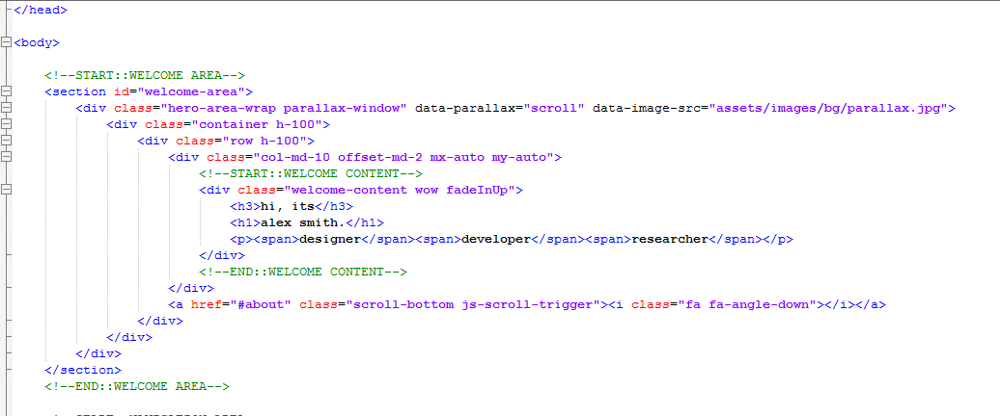
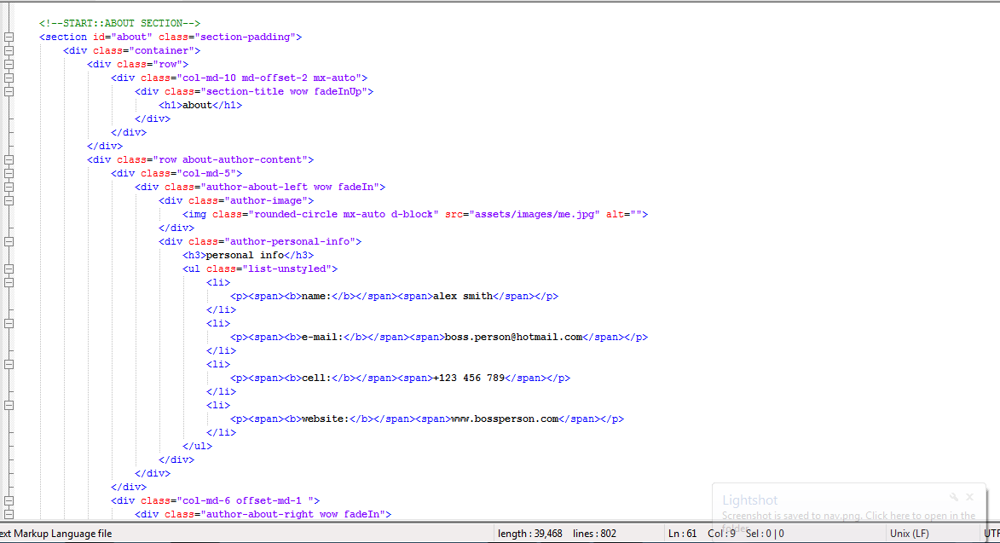
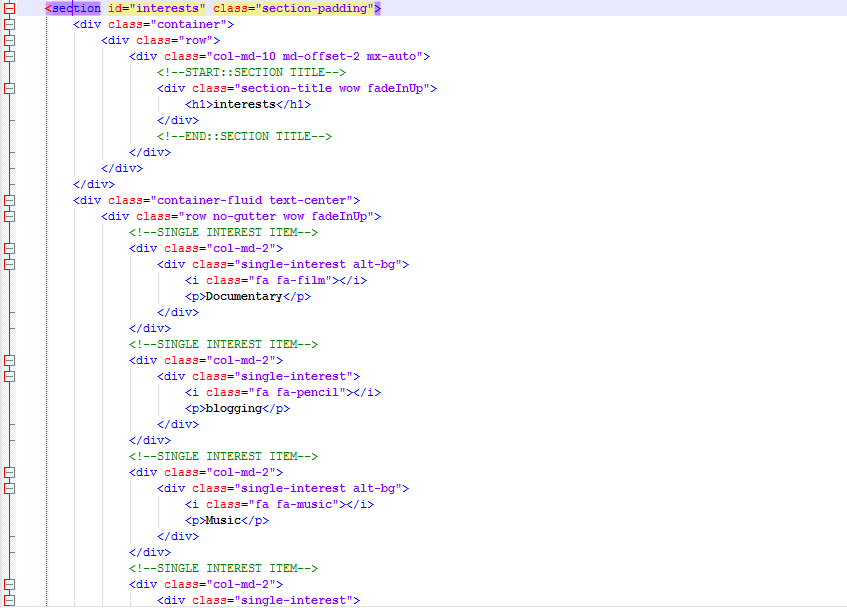
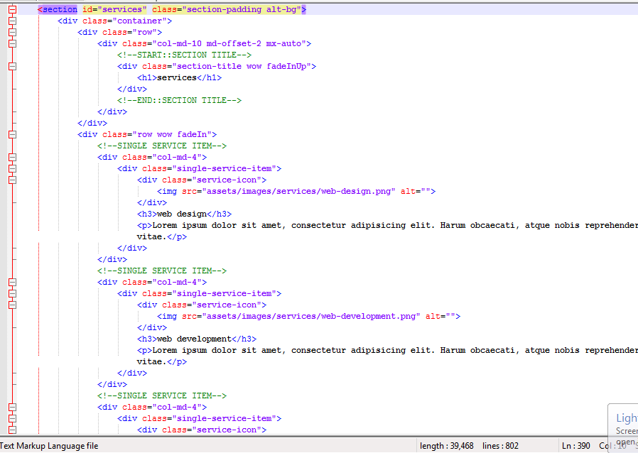
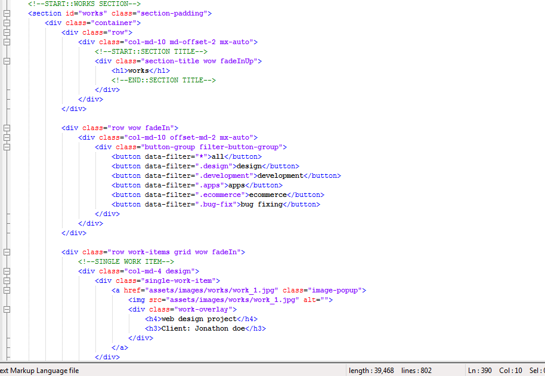
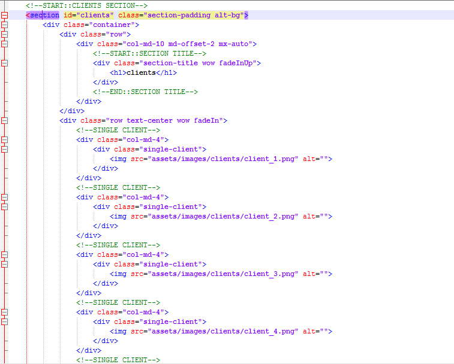
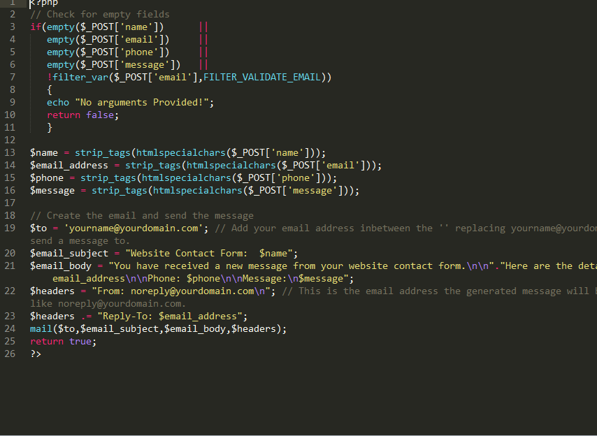

PANDA BOOTSTRAP 4 TEMPLATE
PERSONAL RESUME/PORTFOLIO/CV TEMPLATE
- created: 10/21/2017
- latest update: 10/21/2017
- by: BOSSPERSON
- themeforest/net/user/bossperson
- email: boss.person@hotmail.com
NAVIGATION
For changin the navigation of "PANDA" template you need to open your selected version of this template and open with notepad. I reccomment to open it with notepad++.
Scoll down, You will find a line commented like this <!--START::NAVIGATION AREA-->. Here you will see all the nav texts. You have to edit from here and save it. Enjoy your changes.

HERO AREA
For changin the WELCOME AREA of "PANDA" template you need to open your selected version of this template and open with notepad. I reccomment to open it with notepad++.
Scoll down, You will find a line commented like this <!--START::WELCOME AREA-->. Here you will see all the texts of Hero Area. You have to edit from here and save it. Enjoy your changes

ABOUT
For changin the ABOUT SECTION of "PANDA" template you need to open your selected version of this template and open with notepad. I reccomment to open it with notepad++.
Scoll down, You will find a line commented like this <!--START::ABOUT SECTION-->. Here you will see all the texts of ABOUT Area. You have to edit from here and save it. Enjoy your changes
RESUME
For changin the ABOUT SECTION of "PANDA" template you need to open your selected version of this template and open with notepad. I reccomment to open it with notepad++.
Scoll down, You will find a line commented like this <!--START::RESUME SECTION-->. Here you will see all the texts of RESUME SECTION. You have to edit from here and save it. Enjoy your changes
INSTERESTS
For changin the INTERESTS SECTION of "PANDA" template you need to open your selected version of this template and open with notepad. I reccomment to open it with notepad++.
Scoll down, You will find a line commented like this <!--START::INTERESTS SECTION--> Here you will see all the texts of RESUME SECTION. You have to edit from here and save it. Enjoy your changes
SERVICE
For changin the SERVICES SECTION of "PANDA" template you need to open your selected version of this template and open with notepad. I reccomment to open it with notepad++.
Scoll down, You will find a line commented like this <!--START::SERVICES SECTION--> Here you will see all the texts of RESUME SECTION. You have to edit from here and save it. Enjoy your changes
WORKS
For changin the WORKS SECTION of "PANDA" template you need to open your selected version of this template and open with notepad. I reccomment to open it with notepad++.
Scoll down, You will find a line commented like this <!--START::WORKS SECTION--> Here you will see all the texts of RESUME SECTION. You have to edit from here and save it. Enjoy your changes
CLIENTS
For changin the CLIENTS SECTION of "PANDA" template you need to open your selected version of this template and open with notepad. I reccomment to open it with notepad++.
Scoll down, You will find a line commented like this <!--START::CLIENTS SECTION--> Here you will see all the texts of RESUME SECTION. You have to edit from here and save it. Enjoy your changes
CONTACT
For changin the CONTACT SECTION of "PANDA" template you need to open your selected version of this template and open with notepad. I reccomment to open it with notepad++.
Scoll down, You will find a line commented like this <!--START::CONTACT SECTION--> Here you will see all the texts of RESUME SECTION. You have to edit from here and save it. Enjoy your changes
For getting mails from the website contact form you need to put your mail in the "email/contact_me.php" file. That's all
